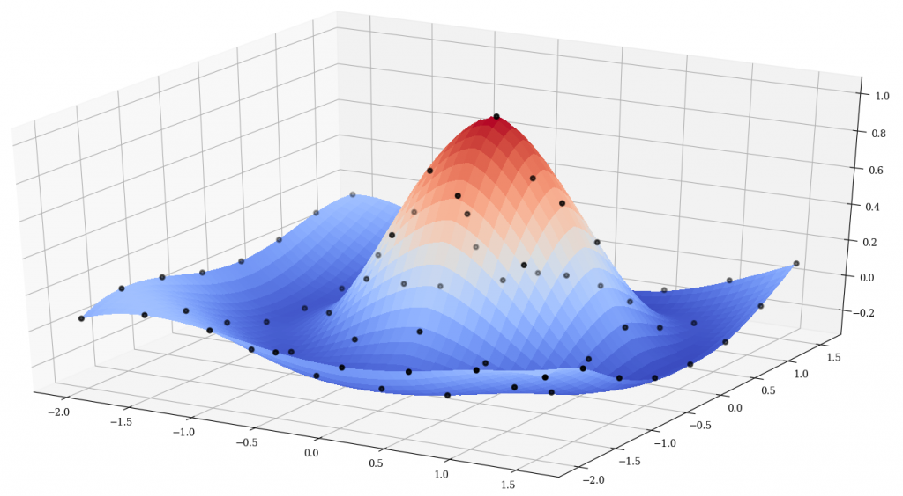

regridpack

Status


Brief Description
This is an updated and modernized version of REGRIDPACK, a suite of Fortran routines for interpolating values between one-, two-, three-, and four-dimensional arrays defined on uniform or nonuniform orthogonal grids. This operation is commonly referred to as "regridding." Linear or cubic interpolation can be selected independently in each dimension. Extrapolation is not allowed. The subroutines in REGRIDPACK cannot be used to transfer values on nonorthogonal (randomly scattered) data grids.
Source
The original Fortran 77 version of this code used to be available from UCAR at: http://www.scd.ucar.edu/softlib/REGRIDPACK.html and/or ftp://ftp.ucar.edu/ftp/dsl/lib/regridpack/ but, as of 2019, both links are now dead. It's possible that this library was formerly known as TLCPACK. There were apparently also unit tests programs (trgrd1.f, trgrd2.f, trgrd3.f, trgrd4.f, trgrd1u.f, trgrd2u.f, trgrd3u.f, and trgrd4u.f) that I can't seem to locate. Does anyone have them?
Compiling
A Fortran Package Manager manifest file is included, so that the library can be compiled with FPM. For example:
fpm build --profile release
fpm test --profile release
To use regridpack within your fpm project, add the following to your fpm.toml file:
[dependencies]
regridpack = { git="https://github.com/jacobwilliams/regridpack.git" }
Documentation
The API documentation for the current master branch can be found here. This is generated by processing the source files with FORD.
License
The regridpack source code and related files and documentation are distributed under a permissive free software license (BSD-style).
See also
- J. Williams, Interpolation, Oct 18, 2019 [degenerateconic.com]